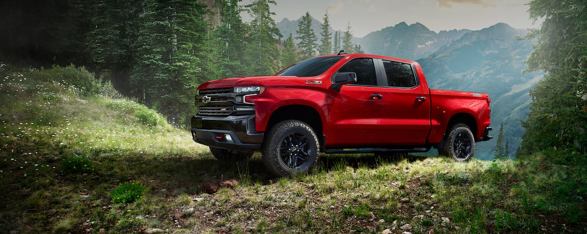

Con bastidores completamente encuadrados y cajas de carga innovadoras de acero de alto
rendimiento, cuentas con la familia de pickup más confiable y duradera en el camino.

Tradición de grandeza
Con todo un legado de experiencia en la construcción de las mejores pick ups del mercado,
Chevrolet Cheyenne te ofrece una camioneta más grande, potente y resistente para explorar,
trabajar y encontrar nuevos caminos.
Potente desempeño
Chevrolet Cheyenne te lleva a encontrar nuevos caminos con el poder y excelente
desempeño de su gran legado.
Sistema de administración dinámica de combustible
Este sistema permite al motor operar en 17 patrones distintos, alternando la activación
entre 2 y 8 cilindros dependiendo de las condiciones del terreno y la demanda del vehículo, con la finalidad de mejorar el desempeño y la eficiencia de combustible.
Lista cuando tú lo necesites
Cada versión de Chevrolet Cheyenne es imponente y tiene una personalidad única,
con parrillas, fascias delanteras y diseños de rines distintivos.
Comodidad para disfrutar
Sin importar el camino que tomes, Chevrolet Cheyenne tiene todo lo que necesitas para un
viaje cómodo.
Conectada con la última tecnología
Desde realizar llamadas y enviar mensajes de voz hasta convertir tu pickup en un hotspot
de Wi-Fi.
Robusta y segura
Chevrolet Cheyenne ofrece la máxima seguridad para mantenerte a salvo mientras recorres
nuevos caminos.
Dicen que el éxito es efímero, dura muy poco, a veces sólo un instante.
Llegar al éxito sólo es el primer paso, el verdadero reto es conservarlo.
Movernos a su velocidad, a su ritmo, con su misma fuerza y en la misma dirección.
Para mantenerlo a tu lado necesitas la potencia, elegancia y la tecnología que ofrecen la
familia de SUV´s de Chevrolet.
Nuestras camionetas fueron diseñadas con todas las comodidades para que te sientas como
en casa mientras estás de viaje.
El interior de nuestras SUVs está pensado para crear una experiencia única con cabinas
diseñadas para aislar el ruido exterior, y al mismo tiempo brindarte toda la tecnología
que necesitas.
Poder y grandeza que infunden respeto
La icónica Chevrolet Suburban lleva más de 85 años de recorrer un camino lleno de
determinación y éxito. Esta nueva generación ofrece mayor espacio para los pasajeros,
un motor más potente y lo último en tecnología.
Su grandeza radica en su comodidad
La nueva Chevrolet Suburban ofrece mayor espacio para las piernas y el mejor
volumen de carga de su clase.
Simplemente imponente
Cada versión de la nueva Chevrolet Suburban ofrece un estilo y diseño único.
Mantente conectado y disfruta cada viaje
Con una conexión Wi-Fi integrada en la nueva Chevrolet Suburban y el nuevo sistema de
info-entretenimiento para la segunda fila de asientos, sus pasajeros tendrán todo lo que
necesitan para mantenerse conectados y entretenidos.
“Poderosa” es su sobrenombre
La nueva Chevrolet Suburban ofrece una suspensión más avanzada, Magnetic Ride Control
y un nuevo motor más potente disponible en la versión High Country con tecnología Dynamic
Fuel Management que mejora el rendimiento de combustible.
Seguridad que te acompaña a cualquier destino
La nueva Chevrolet Suburban ofrece características de seguridad y asistencia para el
conductor, diseñadas para mantener a todos seguros en cada viaje.